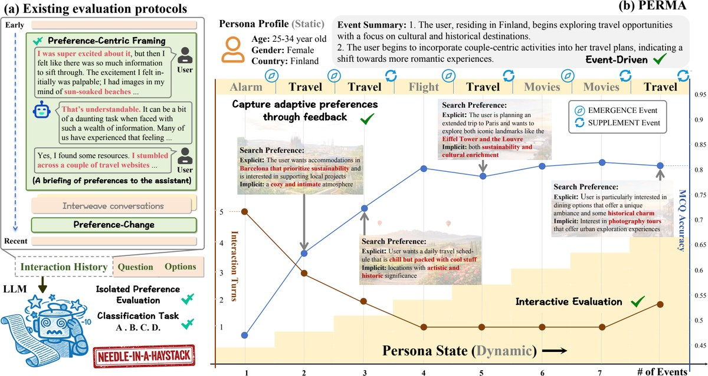

PERMA: Benchmarking Personalized Memory Agents via Event-Driven Preference and Realistic Task Environments
arXiv 2026

In brief
PERMA is a benchmark for personalized memory agents built on how preferences actually form: gradually, across related events, inside noisy interaction histories. Instead of needle-in-a-haystack recall of static preferences, it arranges temporally ordered interaction events across sessions and domains, adds text variability and linguistic alignment to mimic erratic real-world inputs, and probes persona consistency with both multiple-choice and interactive tasks. Memory systems that link related interactions extract preferences more precisely at lower token cost than semantic retrieval over raw dialogues — but they still lose persona coherence over long timelines and across domains.
Key takeaways
- Most memory benchmarks reduce personalization to needle-in-a-haystack retrieval — a preference stated once, buried in filler, and fished back out — so PERMA instead lets preferences emerge gradually across related events: simulated users from 10 countries interacting across 20 topic domains, with 800+ interaction events carrying 2,166 preference details in 1.8M tokens of dialogue.
- Every history comes in three tiers — clean dialogue; noise-injected, adding five kinds of in-session disruption from inconsistent preferences to multilingual and colloquial phrasing; and style-aligned long-context, where user messages mimic real people from the public WildChat corpus of ChatGPT conversations, while real dialogues pad contexts up to 128k tokens.
- Timing is the probe: questions are asked before any relevant history exists (zero-memory), right after preferences form (in-time), and again at the end of a long noisy timeline (post-intervention) — plus an interactive mode where an LLM user simulator gives corrective feedback, up to 10 turns, until the task is done.
- Structure beats similarity search: plain retrieval-augmented generation (RAG) fetches the right fragments — the highest overlap with ground-truth dialogues — yet fails to assemble a coherent persona, while the best memory system, MemOS, hits 0.811 multiple-choice accuracy and the top memory-quality score on fewer retrieved tokens; the systems that compress most aggressively (99%+ context reduction) fall below even RAG.
- Counterintuitively, messy users help: injecting in-session noise raises the best memory system's accuracy from 0.811 to 0.853 — contradictions and corrections act as internal conflicts that make preferences stand out, nearly doubling its retrieval volume.
- No memory system keeps a persona fully coherent over time — accuracy drops between the in-time and post-intervention checkpoints, in some systems (Memobase, LightMem) late inputs overwrite the long-term persona (recency bias) while MemOS stays stable, and first-try success falls sharply on questions that combine preferences across domains.
- Long-context reasoning models are strong but costly: Kimi-K2.5 tops the leaderboard at 0.882 accuracy by reading the entire history (~34k tokens in the main setting) on every query — and in the long-context tier, once histories reach ~116k tokens, the plain GPT-4o-mini backbone stops responding altogether while memory systems stay stable, at up to 300× higher token efficiency than vanilla long-context models.
Abstract
Empowering large language models with long-term memory is crucial for building agents that adapt to users' evolving needs. Existing evaluations of this capability typically interleave preference-related dialogues with irrelevant conversations, reducing the task to needle-in-a-haystack retrieval while ignoring relationships between events driving user preference evolution. Such settings overlook a fundamental characteristic of real-world personalization: preferences emerge gradually and accumulate across interactions within noisy contexts. To bridge this gap, we introduce PERMA, a benchmark designed to evaluate persona consistency over time beyond static preference recall. Additionally, we incorporate (1) text variability and (2) linguistic alignment to simulate erratic user inputs and individual idiolects in real-world data. PERMA consists of temporally ordered interaction events spanning multiple sessions and domains, with preference-related queries inserted over time. We design both multiple-choice and interactive tasks to probe the model's understanding of persona along the interaction timeline. Experiments demonstrate that by linking related interactions, advanced memory systems extract precise preferences and reduce token consumption, outperforming traditional semantic retrieval of raw dialogues. Nevertheless, they still struggle to maintain a coherent persona across temporal depth and cross-domain interference, highlighting the need for more robust personalized memory management in agents. Our code and data are open-sourced at https://github.com/PolarisLiu1/PERMA.
BibTeX
@misc{perma,
title = {{PERMA}: Benchmarking Personalized Memory Agents via {Event-Driven} Preference and Realistic Task Environments},
author = {Liu, Shuochen and Zhu, Junyi and Shu, Long and Lin, Junda and Chen, Yuhao and Zhang, Haotian and Zhang, Chao and Xu, Derong and Li, Jia and Tang, Bo and Li, Zhiyu and Xiong, Feiyu and Chen, Enhong and Xu, Tong},
year = {2026},
eprint = {2603.23231},
archivePrefix = {arXiv},
doi = {10.48550/arXiv.2603.23231},
url = {https://arxiv.org/abs/2603.23231},
}